Компактное устройство, которое умещается в кармане и открывает дверь в мир радиочастот, протоколов и цифровых экспериментов. Одна из самых интересных штук, которые я когда-либо держал в руках.
Узнать больше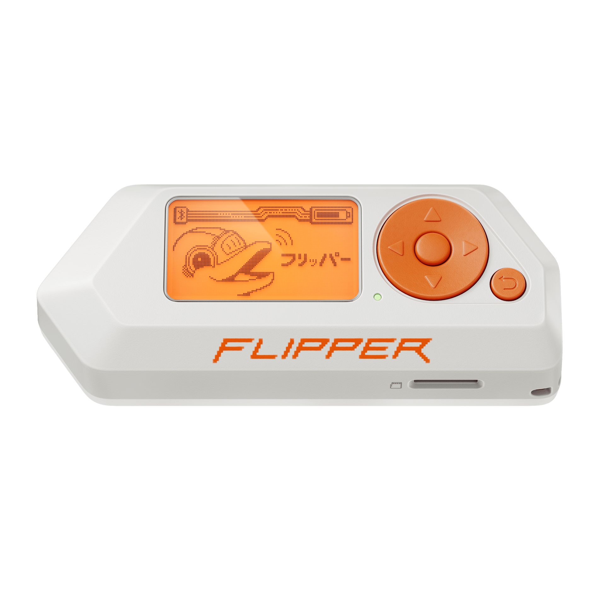
Flipper Zero — это портативный мультиинструмент для пентестеров и гиков в корпусе, напоминающем игрушку. По сути, это швейцарский нож для всех, кто интересуется радиочастотами, системами контроля доступа и электроникой.
Устройство размером с пульт от машины умеет работать с кучей беспроводных протоколов, читать и эмулировать различные карты, управлять бытовой техникой через ИК-порт и многое другое. При этом всё управление — через экранчик с милым дельфином-тамагочи.
Работает с частотами sub-1 GHz, читает и передаёт радиосигналы
Читает NFC, RFID-метки и ключи iButton
Подключение внешних модулей и управление электроникой
Управление телевизорами, кондиционерами и другой техникой
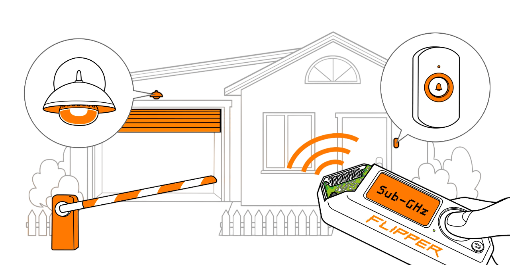
Встроенный радиомодуль позволяет принимать и передавать сигналы на частотах до 1 ГГц. Можно анализировать сигналы пультов, брелков и датчиков. Очень удобно для экспериментов с радиопротоколами.
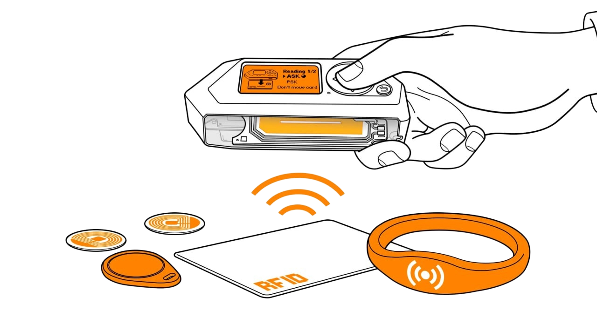
Считывает и эмулирует низкочастотные RFID-метки, которые используются в домофонах, пропусках и системах контроля доступа. Поддерживает популярные протоколы EM-Marin и HID Prox.
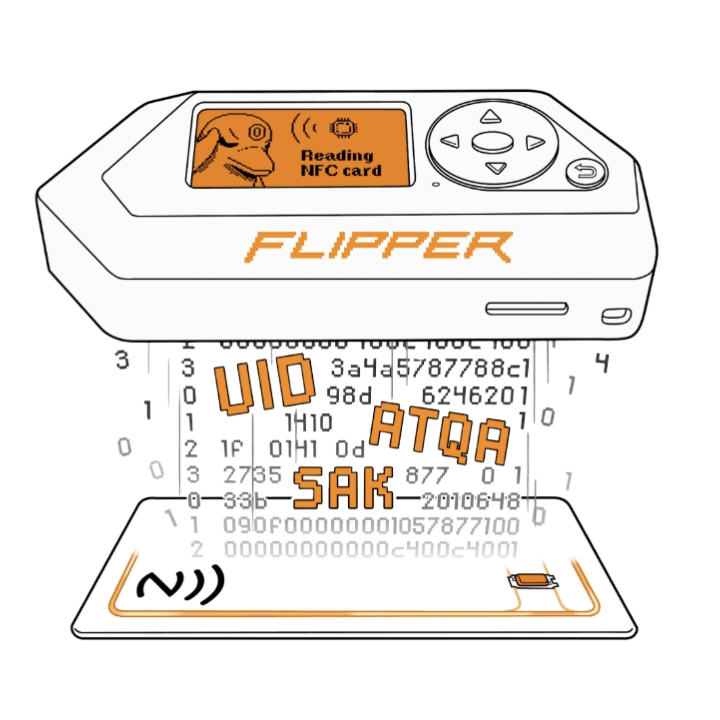
Работает с высокочастотными NFC-метками 13.56 МГц. Читает и эмулирует карты MIFARE, банковские карты (только UID), а также транспортные билеты и другие NFC-устройства.
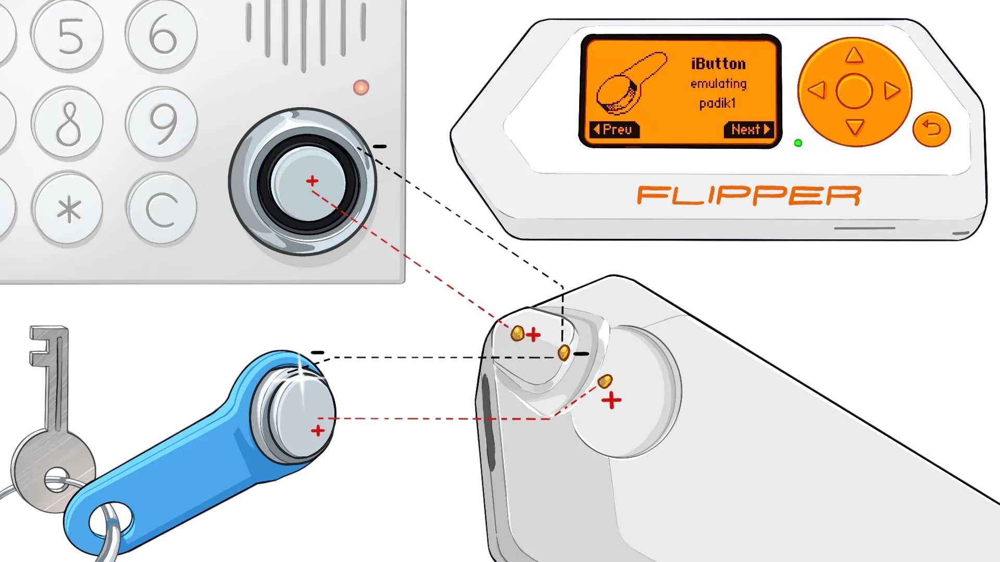
Контактные ключи-таблетки Dallas, которые до сих пор используются во многих домофонах. Flipper Zero умеет читать, сохранять и эмулировать такие ключи через контактную площадку на корпусе.
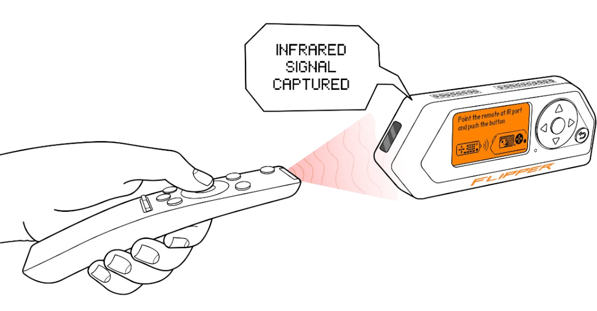
Встроенный ИК-передатчик и приёмник. Можно управлять почти любой бытовой техникой — телевизорами, кондиционерами, проекторами. В прошивке есть огромная база пультов.
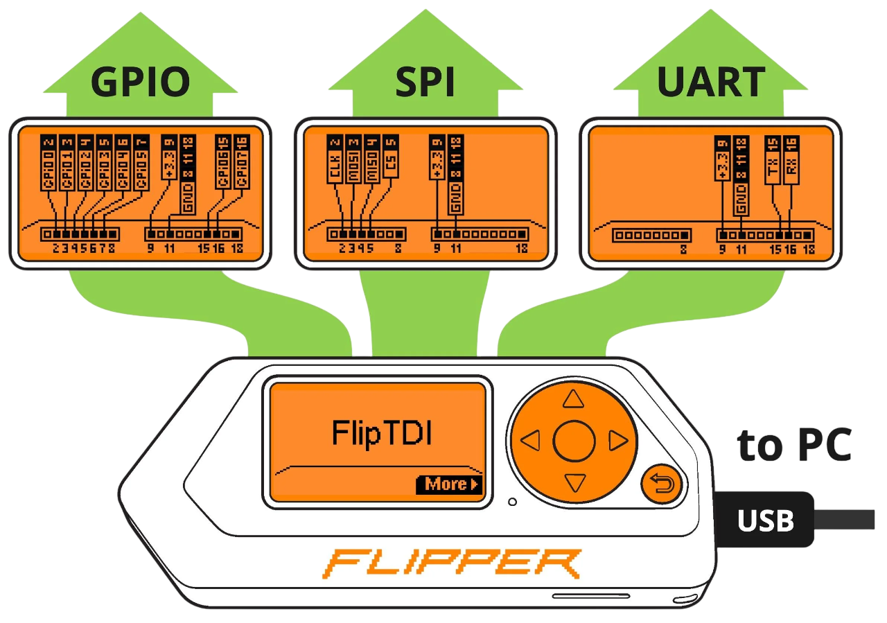
Разъём GPIO на верхней грани позволяет подключать внешние модули, макетные платы и различные датчики. Через него также можно прошивать микроконтроллеры и общаться по UART/SPI/I2C.
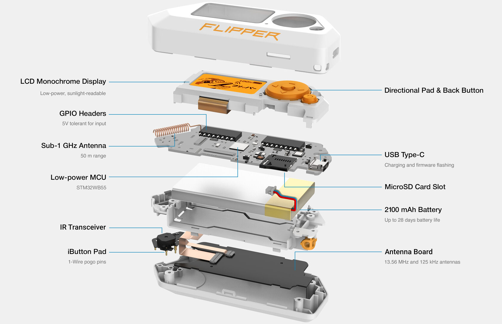
Двухъядерный ARM Cortex-M4 + M0+ со встроенным Bluetooth 5. Мощный и энергоэффективный чип, который управляет всей системой.
Отдельный чип Texas Instruments для работы с sub-GHz частотами. Именно он отвечает за приём и передачу радиосигналов.
Высокопроизводительный NFC-контроллер от STMicroelectronics. Обеспечивает работу с картами на 13.56 МГц.
Инфракрасный передатчик и приёмник для работы с пультами дистанционного управления бытовой техникой.
Монохромный экран 128×64 пикселей с оранжевой подсветкой. Отлично виден на солнце и потребляет минимум энергии.
Встроенный аккумулятор обеспечивает до 30 дней автономной работы. Зарядка через USB-C.
Одна из самых крутых фишек Flipper Zero — возможность расширять функциональность через GPIO-порт. Разработчики и сообщество создали множество модулей, которые превращают и без того мощное устройство в нечто невероятное.
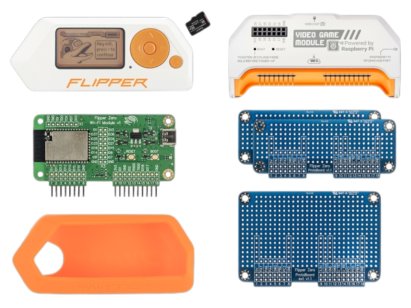
Через GPIO к Flipper Zero подключаются дополнительные платы: Wi-Fi модуль для деаутентификации и мониторинга сетей, модуль для работы с протонными ключами, платы для расширенной работы с радио и многое другое. Сообщество постоянно создаёт новые модули — от CC1101-бустеров до плат с ESP32.
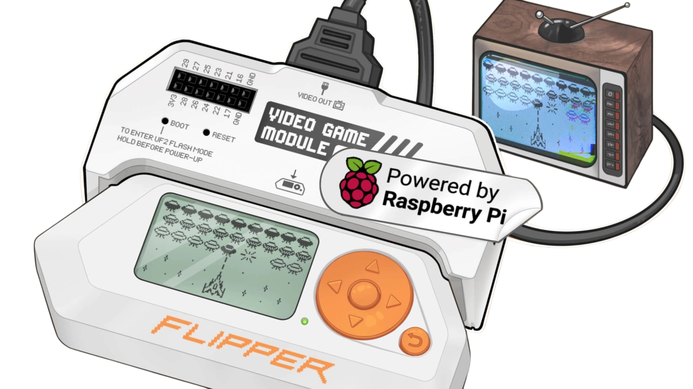
Официальный модуль, который превращает Flipper Zero в портативную ретро-консоль. Подключается через GPIO и позволяет выводить картинку на внешний дисплей или телевизор. Внутри — чип ESP32-S2 с поддержкой видеовыхода. Можно запускать игры, написанные сообществом, или создавать свои собственные.
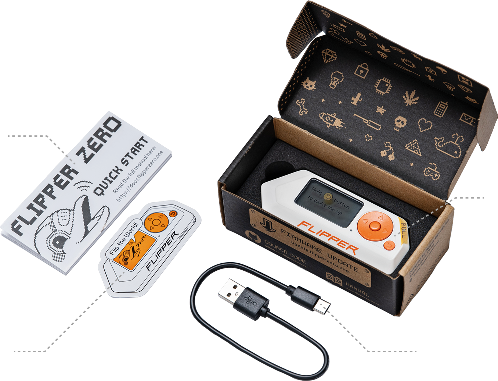
Само устройство в фирменном оранжевом корпусе
Для зарядки и подключения к компьютеру
Краткое руководство по началу работы
Фирменный стикер с дельфином Flippy
Flipper Zero — это не просто устройство, а целая субкультура. Вот несколько причин, почему это устройство стало настоящим хитом среди гиков, хакеров и просто любопытных людей.
Прошивка полностью открыта. Любой может изучить код, доработать его или создать свою альтернативную прошивку. Именно так появились Unleashed, RogueMaster и другие кастомные версии с расширенным функционалом.
Огромное и активное сообщество в Discord, Reddit, Telegram и на форумах. Тысячи энтузиастов делятся опытом, создают плагины, пишут инструкции и помогают новичкам разобраться с устройством.
Flipper Zero — идеальная платформа для обучения и экспериментов. Хочется понять, как работают радиопульты? Или разобраться в NFC? Или научиться работать с GPIO? Это устройство делает всё это доступным и наглядным.
Встроенный виртуальный питомец — дельфин Flippy — оживает по мере использования устройства. Чем больше экспериментируешь, тем выше его уровень. Неожиданно приятная геймификация для хакерского инструмента.